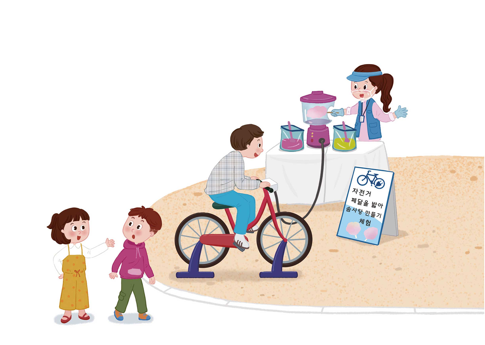

자전거 발전기로 솜사탕 1개를 만들려면 페달을 4분 동안 밟아야 합니다. 솜사탕의 수와 페달을 밟는 시간 사이의 대응 관계를 식으로 어떻게 나타낼 수 있을지 알아봅시다.
자전거
펜을 들아
손사람 만들기
체험

영상을 보고 솜사탕의 수와 페달을 밟는 시간 사이의 대응 관계를
식으로 어떻게 나타낼 수 있을지 이야기해 보세요.
자전거 발전기로 솜사탕 1개를 만들려면 페달을 4분 동안 밟아야 하므로 곱셈식 또는 나눗셈식으로 나타낼 수 있을 것 같습니다.
입력타입토글
리셋
확인